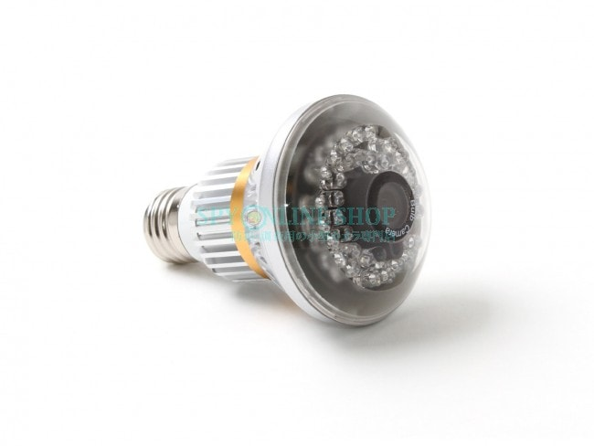
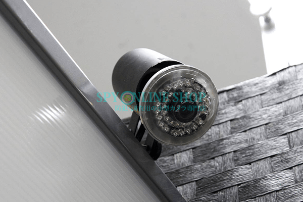

意外と機能的！電球型カメラのご紹介

12月ももう半分が過ぎようとしています・・・
2016年もあと少し、年末の大掃除や、年賀状の準備などは進んでいますか？？
年末年始といえば、ご実家への帰省や、
ご家族での旅行などで家を不在にすることが多い時期ではないでしょうか・・？
そんな帰省シーズンを前に不在時の家を見守る為に是非活用して頂きたい
簡単で、そして手軽に使える防犯カメラをご紹介いたします！
ご紹介する商品は、【電球型カメラ】です。
お客様からもあまりお問い合わせ等がなく目立たない存在なのですが、
実は知る人ぞ知る、便利な商品なんですよ！
その中でも特におすすめなのがワイヤレスでデータ送信ができる「SPD-WW1」です。

電球型カメラは名前の通り、電球の形をしたカメラです。
その為、取り付けはとっても簡単！
ご自宅などにもともとある電球を、電球型カメラに交換するだけ！
後は灯りを点けるのと同じようにスイッチをON/OFFしていただければ自動的に録画をいたします！
録画を開始すると、主な電球型カメラは本体に挿入したmicro SD cardにデータが保存されるのですが、
今回ご紹介する『SPD-WW1』は違います。
『SPD-WW1』は録画した映像をワイヤレスで専用の受信機に送信することができるのです！
専用の受信機は普段からお使いになっているTVに接続することで映像の確認ができ、
更にそのTVにHDDや、DVDレコーダーを接続していただければ送信されてきた
データを保存することができます。
今回は、どのように撮影ができるのか、
操作方法をご紹介する映像を作成しましたので、ぜひ一度ご覧ください。↓↓↓
いかがでしょうか・・？？
「受信機」なんて聞くと難しく感じてしまうかと思いますが、
簡単に使うことができて結構お手軽と感じていただけたのではないでしょうか・・？
帰省中はちょっと使いにくい機能かもしれませんが・・
『SPD-WW1』は別売りの電球型カメラ(②番、③番、④番電球)を追加で取り付けることで、
最大4か所の映像を確認することができます！
店舗経営者の方など、複数の場所の映像を確認したい方などにもおすすめできる機能です！
電球を追加した場合の操作についてもご紹介する映像を作成いたしました！
こちらの映像も是非ご覧ください↓↓↓
いかがでしょうか・・！
意外と機能的なんだな・・と感じて頂けたら嬉しいです！！
また、防犯対策をするにあたって気になるのが『夜間』等の暗い時間ではないでしょうか？
『SPD-WW1』には暗闇を感知すると自動的に赤外線が照射される「自動赤外線機能」も搭載しており
真っ暗闇であっても最大10ｍ先の被写体を捉えて映像に映し出すことができます！
人間の目でも見えない真っ暗闇の中でも撮影ができるので、
不在時の部屋の様子を記録するのにピッタリです！
ご紹介した以外の「SPW-WW1」の詳細なスペック等はこちらからご覧いただけます↓↓↓
【SPD-WW1】

そのほかの電球型カメラについては以下よりご覧いただけます！
⇒ 電球型カメラ一覧へ
ご注意下さい
◆ワイヤレスで映像送信可能な範囲は約10ｍです。
◆当カメラに映像は保存されませんので、別途HDD、DVDレコーダー等にて映像を保存してください。
◆電球の口径は一般的なE26です。
◆通常の電球のように灯りがつくことはありません。
あの時やっておけば・・・そんな後悔をしないよう
早め早めの防犯対策をお勧めいたします！
設置場所や、設置目的によってご紹介する商品が変わってまいりますので
些細なことでもご相談、お問い合わせくださいませ！
当店HPはコチラ↓↓からご覧いただけます！
【ＳＰＹ－ＯＮＬＩＮＥ－ＳＨＯＰ】

ご相談・ご質問はこちらから!!（店舗サイトのお問合せページへ飛びます）
mail：shop@spy-online.jp
tel：042-719-3319 (対応時間10：00～12：00、13：00～17：00)
それでは今日はこのへんで・・次回更新をお楽しみに！
また近々お会いしましょう(＾＾)